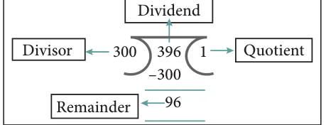
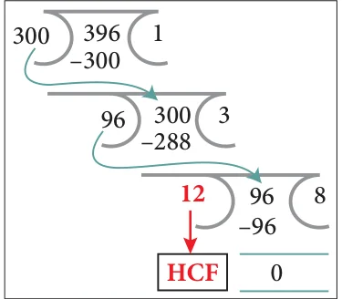

<!DOCTYPE html>
<html lang="en">
<head>
<meta charset="UTF-8">
<meta name="viewport" content="width=device-width,initial-scale=1">
<title>7.6 Highest Common Factor — Information Processing</title>
<meta name="description" content="Class 8 Mathematics · Information Processing · 7.6 Highest Common Factor">
<link rel="icon" href="data:image/svg+xml,<svg xmlns='http://www.w3.org/2000/svg' viewBox='0 0 100 100'><text y='.9em' font-size='90'>📘</text></svg>">
<link rel="stylesheet" href="../../../assets/book.css">
<link rel="stylesheet" href="https://cdn.jsdelivr.net/npm/katex@0.16.11/dist/katex.min.css" crossorigin="anonymous">
</head>
<body>
<header class="topbar">
<div class="topbar-in">
  <div class="crumb">
    <span class="c1"><a href="../../../index.html">Library</a> · <a href="../../index.html">Class 8 Mathematics</a></span>
    <span class="c2">Information Processing · 7.6 Highest Common Factor</span>
  </div>
  <a class="tb-btn" data-nav="prev" href="../../07-information-processing/07-fibonacci-numbers-7.5/index.html" title="7.5 Fibonacci Numbers">←</a>
  <details class="drawer"><summary class="tb-btn" title="Sections in this chapter">☰</summary>
<div class="drawer-panel"><div class="dh">Information Processing</div><a href="../01-chapter-opener/index.html">Chapter opener</a><a href="../02-introduction-7.1/index.html">7.1 Introduction</a><a href="../03-principles-of-counting-7.2/index.html">7.2 Principles of Counting</a><a href="../04-set-game-7.3/index.html">7.3 SET - Game</a><a href="../05-map-colouring-7.4/index.html">7.4 Map Colouring</a><a href="../06-exercise-7.1/index.html">Exercise 7.1</a><a href="../07-fibonacci-numbers-7.5/index.html">7.5 Fibonacci Numbers</a><a href="../08-highest-common-factor-7.6/index.html" aria-current="page">7.6 Highest Common Factor</a><a href="../09-exercise-7.2/index.html">Exercise 7.2</a><a href="../10-cryptology-7.7/index.html">7.7 Cryptology</a><a href="../11-exercise-7.3/index.html">Exercise 7.3</a><a href="../12-shopping-comparison-7.8/index.html">7.8 Shopping Comparison</a><a href="../13-packing-7.9/index.html">7.9 Packing</a><a href="../14-exercise-7.4/index.html">Exercise 7.4</a></div></details>
  <a class="tb-btn" data-nav="next" href="../../07-information-processing/09-exercise-7.2/index.html" title="Exercise 7.2">→</a>
  <button class="tb-btn" data-theme-toggle title="Toggle light / dark" aria-label="Toggle light or dark theme">◐</button>
</div>
<div class="progress"><span style="width:92.6%"></span></div>
</header>
<main class="wrap">
<div class="sec-head">
  <p class="eyebrow"><a href="../index.html">Chapter 7 · Information Processing</a></p>
  <h1>7.6 Highest Common Factor</h1>
  <p class="sec-meta">Textbook pages 20–22 · 8 figures</p>
</div>
<article class="prose">
<p>We have learnt in class VI that iteration is a process wherein a set of instructions or structures are repeated in a sequence for a specified number of times or until a condition is met. Here, we are going to learn to find HCF by listing all factors and find the biggest, then to find HCF by repeated subtraction and see to how much faster the iteration goes (and how in fewer steps you get the HCF) and then how to improve further by repeated division and remainder and that both lead to the same solution but one is faster than the other. We know that, HCF is used in simplifying or reducing fractions. To understand how this concept applies in real life, imagine the following situation.</p>
<h3 id="s-7-6-1-methods-to-find-hcf-highest-common-factor">7.6.1 Methods to find HCF (Highest Common Factor):</h3>
<ul class="qlist">
<li><span class="mk">1.</span><span class="lt">Factorisation Method:</span></li>
</ul>
<h4 class="callout-h" id="s-situation">Situation:</h4>
<p>Let us assume that you have 20 mangoes and 15 apples. You want to donate them together equally among the orphan children. How many orphan children can you help at the maximum? Here, basically question demands finding HCF of two numbers. HCF is Highest Common Factor, also known as GCD (Greatest Common Divisor). HCF of two or more than two numbers is such that, it is the largest possible number which divides given numbers completely.</p>
<figure class="fig side-fig"></figure>
<p>Here, let us find the HCF of 20 mangoes and 15 apples.</p>
<div class="mathblock"><p>Factors of \(20 = 1,2,4\), 5 ,10,20 Factors of \(15 = 1,3\), 5 ,15</p></div>
<p>So, the HCF of 20 and 15 is 5. That is, you can a help maximum of 5 orphan children.</p>
<figure class="fig side-fig"></figure>
<p>So that for 5 children you can give 4 mangoes \((20 \div 5 = 4)\) and 3 apples \((15 \div 5 = 3)\) to each of them. In this way you can distribute equally the mangoes</p>
<figure class="fig"></figure>
<p>and the apples to each child.</p>
<ul class="qlist">
<li><span class="mk">2.</span><span class="lt">Prime Factorisation Method:</span></li>
</ul>
<h4 class="callout-h" id="s-situation">Situation:</h4>
<p>Suppose there are 18 students in Class VII and 27 in Class VIII and each class is divided into teams to prepare for an upcoming sports tournament, with the winning teams from each class play each other in the final. What would be the biggest possible team size that you could divide both these classes such that each team has exactly the same number of students and that no one is left behind.</p>
<p>The problem here is to find the HCF of 18 and 27.</p>
<p>Prime Factors of \(18 = 2 x 3 x 3\) Prime Factors of \(27 = 3 x 3 x 3\) Common prime factors of 18 and \(27 = 3 x 3 = 9\) So, the HCF of 18 and 27 is 9. Now, let us learn some more methods of finding the HCF. The largest team member each group is 9, Std VII has 2 teams and Std VIII has 3 teams.</p>
<h3 id="s-3-repeated-division-method">3. Repeated Division Method:</h3>
<p>The above methods are easy to finding HCF, but for larger numbers these methods are tedious to find factors of the given numbers. In that case, alternatively we have some more methods to find HCF. Let us learn more about the other methods of finding the HCF. For the above Situation, what if the Class VII had 396 students and Class VIII had 300 students? Then, what would be the biggest possible team size? Well, the above said two methods may not help us quickly. So, we can use continuous division method for finding the highest common factor.</p>
<p>STEP 1: Divide the larger number by the smaller number.</p>
<figure class="fig side-fig"></figure>
<p>Here, 360 is the larger number. So, we divide 360 (Dividend) by 300 (Divisor). We get the Remainder as 96.</p>
<p>STEP 2: The remainder from Step 1 becomes the new divisor, and divisor of Step 1 becomes the new dividend.</p>
<figure class="fig"></figure>
<p>From the step 1, we got 96 as remainder. So, in the second step 96 becomes the new divisor and 300 becomes the new dividend.</p>
<p>STEP 3: Repeat this division process till remainder becomes zero. The divisor of the last division (when remainder is zero) is the HCF.</p>
<p>From step 2, we got 12 as the new remainder which will become the new divisor. In the third step 12 becomes the new divisor and 96 becomes the new dividend. Now, the</p>
<figure class="fig side-fig"></figure>
<p>remainder is zero when 12 is the last divisor of the division. Therefore,12 is the required HCF.</p>
<p>Hence, the HCF of 396 and 300 is 12. So each team would be 12 students.</p>
<ul class="qlist">
<li><span class="mk">4.</span><span class="lt">Repeated Subtraction Method:</span></li>
</ul>
<p>To find the HCF for the given two numbers say m and n we do the subtraction continuously until m and n are equal. For example, Find the HCF of 144 and 120</p>
<p>STEP 1: Check whether \(m = n\)</p>
<p>Here, take \(m = 144\) and \(n = 120\) Check whether \(m = n\) or \(m &gt; n\) or \(m &lt; n\) Here \(m &gt; n (144 &gt; 120)\).</p>
<p>STEP 2: m \(&gt; n\) perform \(m - n\) repeat the process till \(m = n\) or \(m &lt; n\) perform \(n - m\) repeat the process till \(m = n\)</p>
<p>If m is greater than n, then we perform \(m - n\) and assign the result (the difference) as m. Again we check whether m and n are equal or not and repeat the process. If m is less than n, then we perform \(n - m\) and we assign the result (the difference) as n. Again we check whether m and n are equal or not and the process is repeated. Subtract 120(n) from 144(m) till \(m = n\). First \(144 - 120 = 24\) Repeat \(120 - 24 = 96\) Repeat \(96 - 24 = 72\) Repeat \(72 - 24 = 48\) Repeat \(48 - 24 = 24\) Repeat \(24 - 24 = 0\)</p>
<p>STEP 3: When m and n values are equal then that equal value will be the HCF (m, n).</p>
<p>Now \(m = n\), Hence, we conclude that the HCF of 144 and 120 is 24. Comparing both the repeated division and repeated subtraction methods, in finding the HCF, we can conclude that the repeated subtraction, in one way is easier and gives the HCF faster that the repeated division and also that one would want to easily do subtraction rather than division. Isn’t it ?</p>
</article>
<nav class="pager"><a class="" data-nav="prev" href="../../07-information-processing/07-fibonacci-numbers-7.5/index.html"><span class="dir">← Previous</span><span class="t">7.5 Fibonacci Numbers</span><span class="ch">Information Processing</span></a><a class="nx" data-nav="next" href="../../07-information-processing/09-exercise-7.2/index.html"><span class="dir">Next →</span><span class="t">Exercise 7.2</span><span class="ch">Information Processing</span></a></nav>
</main><footer class="site">Generated from the source textbook PDFs · text, figures and exercises belong to their respective publishers.</footer><script defer src="https://cdn.jsdelivr.net/npm/katex@0.16.11/dist/katex.min.js" crossorigin="anonymous"></script>
<script defer src="https://cdn.jsdelivr.net/npm/katex@0.16.11/dist/contrib/auto-render.min.js" crossorigin="anonymous"
  onload="renderMathInElement(document.body,{delimiters:[
    {left:'\\(',right:'\\)',display:false},
    {left:'$$',right:'$$',display:true},
    {left:'\\[',right:'\\]',display:true}],throwOnError:false,ignoredTags:['script','noscript','style','textarea','pre','code']})"></script>
<script src="../../../assets/book.js"></script>
<script defer src="../../../../assets/search.js"></script>
<script defer src="../../../../assets/screenshot.js"></script>
</body>
</html>
